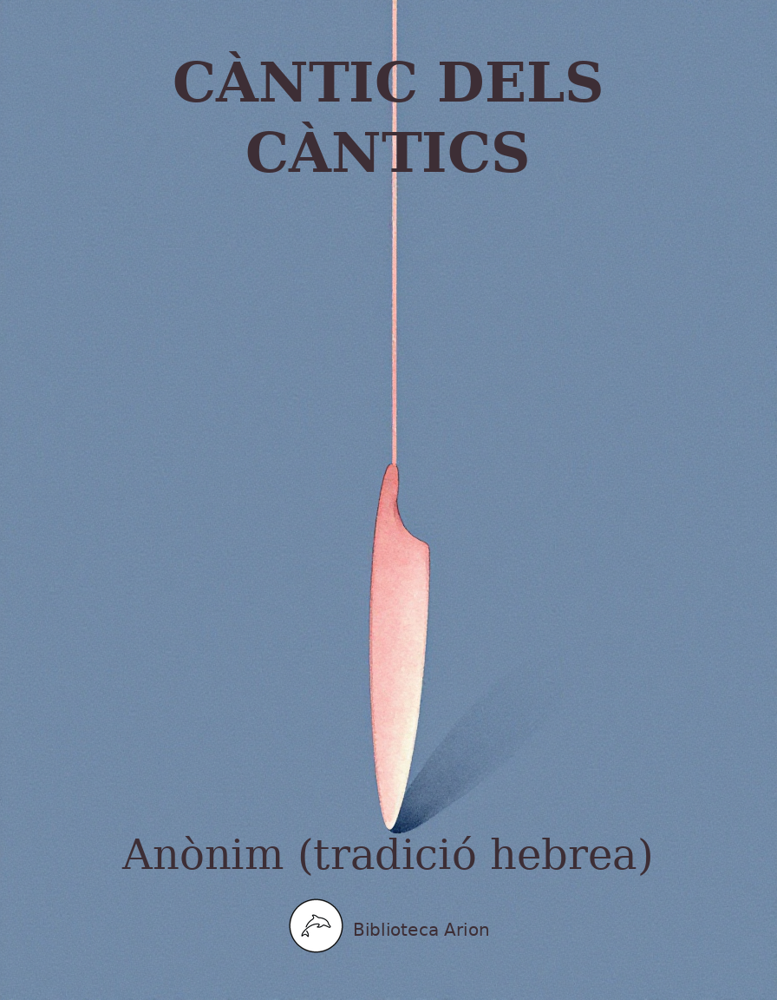

Càntic dels Càntics
שיר השירים (Šīr haššīrīm)
Poema d'amor líric del cànon bíblic hebreu, atribuït tradicionalment al rei Salomó. Celebra l'amor eròtic entre dos amants amb rica imagineria pastoral i sensual. Considerat al·legoria mística tant en la tradició jueva com cristiana. Un dels textos poètics més bells i influents de la literatura universal.
Llengua original: hebreu bíblic
Font: Sefaria.org — Miqra According to the Masorah (CC BY-SA)
פרק 1 — Capítol 1
1:1 שִׁ֥יר הַשִּׁירִ֖ים אֲשֶׁ֥ר לִשְׁלֹמֹֽה׃
1:2 יִשָּׁקֵ֙נִי֙ מִנְּשִׁיק֣וֹת פִּ֔יהוּ כִּֽי־טוֹבִ֥ים דֹּדֶ֖יךָ מִיָּֽיִן׃
1:3 לְרֵ֙יחַ֙ שְׁמָנֶ֣יךָ טוֹבִ֔ים שֶׁ֖מֶן תּוּרַ֣ק שְׁמֶ֑ךָ עַל־כֵּ֖ן עֲלָמ֥וֹת אֲהֵבֽוּךָ׃
1:4 מׇשְׁכֵ֖נִי אַחֲרֶ֣יךָ נָּר֑וּצָה הֱבִיאַ֨נִי הַמֶּ֜לֶךְ חֲדָרָ֗יו נָגִ֤ילָה וְנִשְׂמְחָה֙ בָּ֔ךְ נַזְכִּ֤ירָה דֹדֶ֙יךָ֙ מִיַּ֔יִן מֵישָׁרִ֖ים אֲהֵבֽוּךָ׃ {פ}
1:5 שְׁחוֹרָ֤ה אֲנִי֙ וְֽנָאוָ֔ה בְּנ֖וֹת יְרוּשָׁלָ֑͏ִם כְּאׇהֳלֵ֣י קֵדָ֔ר כִּירִיע֖וֹת שְׁלֹמֹֽה׃
1:6 אַל־תִּרְא֙וּנִי֙ שֶׁאֲנִ֣י שְׁחַרְחֹ֔רֶת שֶׁשְּׁזָפַ֖תְנִי הַשָּׁ֑מֶשׁ בְּנֵ֧י אִמִּ֣י נִֽחֲרוּ־בִ֗י שָׂמֻ֙נִי֙ נֹטֵרָ֣ה אֶת־הַכְּרָמִ֔ים כַּרְמִ֥י שֶׁלִּ֖י לֹ֥א נָטָֽרְתִּי׃
1:7 הַגִּ֣ידָה לִּ֗י שֶׁ֤אָֽהֲבָה֙ נַפְשִׁ֔י אֵיכָ֣ה תִרְעֶ֔ה אֵיכָ֖ה תַּרְבִּ֣יץ בַּֽצׇּהֳרָ֑יִם שַׁלָּמָ֤ה אֶֽהְיֶה֙ כְּעֹ֣טְיָ֔ה עַ֖ל עֶדְרֵ֥י חֲבֵרֶֽיךָ׃
1:8 אִם־לֹ֤א תֵֽדְעִי֙ לָ֔ךְ הַיָּפָ֖ה בַּנָּשִׁ֑ים צְֽאִי־לָ֞ךְ בְּעִקְבֵ֣י הַצֹּ֗אן וּרְעִי֙ אֶת־גְּדִיֹּתַ֔יִךְ עַ֖ל מִשְׁכְּנ֥וֹת הָרֹעִֽים׃ {פ}
1:9 לְסֻֽסָתִי֙ בְּרִכְבֵ֣י פַרְעֹ֔ה דִּמִּיתִ֖יךְ רַעְיָתִֽי׃
1:10 נָאו֤וּ לְחָיַ֙יִךְ֙ בַּתֹּרִ֔ים צַוָּארֵ֖ךְ בַּחֲרוּזִֽים׃
1:11 תּוֹרֵ֤י זָהָב֙ נַֽעֲשֶׂה־לָּ֔ךְ עִ֖ם נְקֻדּ֥וֹת הַכָּֽסֶף׃
1:12 עַד־שֶׁ֤הַמֶּ֙לֶךְ֙ בִּמְסִבּ֔וֹ נִרְדִּ֖י נָתַ֥ן רֵיחֽוֹ׃
1:13 צְר֨וֹר הַמֹּ֤ר׀דּוֹדִי֙ לִ֔י בֵּ֥ין שָׁדַ֖י יָלִֽין׃
1:14 אֶשְׁכֹּ֨ל הַכֹּ֤פֶר׀דּוֹדִי֙ לִ֔י בְּכַרְמֵ֖י עֵ֥ין גֶּֽדִי׃ {ס}
1:15 הִנָּ֤ךְ יָפָה֙ רַעְיָתִ֔י הִנָּ֥ךְ יָפָ֖ה עֵינַ֥יִךְ יוֹנִֽים׃
1:16 הִנְּךָ֨ יָפֶ֤ה דוֹדִי֙ אַ֣ף נָעִ֔ים אַף־עַרְשֵׂ֖נוּ רַעֲנָנָֽה׃
1:17 קֹר֤וֹת בָּתֵּ֙ינוּ֙ אֲרָזִ֔ים (רחיטנו) [רַהִיטֵ֖נוּ] בְּרוֹתִֽים׃
פרק 2 — Capítol 2
2:1 אֲנִי֙ חֲבַצֶּ֣לֶת הַשָּׁר֔וֹן שׁוֹשַׁנַּ֖ת הָעֲמָקִֽים׃
2:2 כְּשֽׁוֹשַׁנָּה֙ בֵּ֣ין הַחוֹחִ֔ים כֵּ֥ן רַעְיָתִ֖י בֵּ֥ין הַבָּנֽוֹת׃
2:3 כְּתַפּ֙וּחַ֙ בַּעֲצֵ֣י הַיַּ֔עַר כֵּ֥ן דּוֹדִ֖י בֵּ֣ין הַבָּנִ֑ים בְּצִלּוֹ֙ חִמַּ֣דְתִּי וְיָשַׁ֔בְתִּי וּפִרְי֖וֹ מָת֥וֹק לְחִכִּֽי׃
2:4 הֱבִיאַ֙נִי֙ אֶל־בֵּ֣ית הַיָּ֔יִן וְדִגְל֥וֹ עָלַ֖י אַהֲבָֽה׃
2:5 סַמְּכ֙וּנִי֙ בָּאֲשִׁישׁ֔וֹת רַפְּד֖וּנִי בַּתַּפּוּחִ֑ים כִּי־חוֹלַ֥ת אַהֲבָ֖ה אָֽנִי׃
2:6 שְׂמֹאלוֹ֙ תַּ֣חַת לְרֹאשִׁ֔י וִימִינ֖וֹ תְּחַבְּקֵֽנִי׃
2:7 הִשְׁבַּ֨עְתִּי אֶתְכֶ֜ם בְּנ֤וֹת יְרוּשָׁלַ֙͏ִם֙ בִּצְבָא֔וֹת א֖וֹ בְּאַיְל֣וֹת הַשָּׂדֶ֑ה אִם־תָּעִ֧ירוּ׀וְֽאִם־תְּע֥וֹרְר֛וּ אֶת־הָאַהֲבָ֖ה עַ֥ד שֶׁתֶּחְפָּֽץ׃ {ס}
2:8 ק֣וֹל דּוֹדִ֔י הִנֵּה־זֶ֖ה בָּ֑א מְדַלֵּג֙ עַל־הֶ֣הָרִ֔ים מְקַפֵּ֖ץ עַל־הַגְּבָעֽוֹת׃
2:9 דּוֹמֶ֤ה דוֹדִי֙ לִצְבִ֔י א֖וֹ לְעֹ֣פֶר הָאַיָּלִ֑ים הִנֵּה־זֶ֤ה עוֹמֵד֙ אַחַ֣ר כׇּתְלֵ֔נוּ מַשְׁגִּ֙יחַ֙ מִן־הַֽחַלֹּנ֔וֹת מֵצִ֖יץ מִן־הַחֲרַכִּֽים׃
2:10 עָנָ֥ה דוֹדִ֖י וְאָ֣מַר לִ֑י ק֥וּמִי לָ֛ךְ רַעְיָתִ֥י יָפָתִ֖י וּלְכִי־לָֽךְ׃
2:11 כִּֽי־הִנֵּ֥ה הַסְּתָ֖ו עָבָ֑ר הַגֶּ֕שֶׁם חָלַ֖ף הָלַ֥ךְ לֽוֹ׃
2:12 הַנִּצָּנִים֙ נִרְא֣וּ בָאָ֔רֶץ עֵ֥ת הַזָּמִ֖יר הִגִּ֑יעַ וְק֥וֹל הַתּ֖וֹר נִשְׁמַ֥ע בְּאַרְצֵֽנוּ׃
2:13 הַתְּאֵנָה֙ חָנְטָ֣ה פַגֶּ֔יהָ וְהַגְּפָנִ֥ים׀סְמָדַ֖ר נָ֣תְנוּ רֵ֑יחַ ק֥וּמִי (לכי) [לָ֛ךְ] רַעְיָתִ֥י יָפָתִ֖י וּלְכִי־לָֽךְ׃ {ס}
2:14 יוֹנָתִ֞י בְּחַגְוֵ֣י הַסֶּ֗לַע בְּסֵ֙תֶר֙ הַמַּדְרֵגָ֔ה הַרְאִ֙ינִי֙ אֶת־מַרְאַ֔יִךְ הַשְׁמִיעִ֖נִי אֶת־קוֹלֵ֑ךְ כִּֽי־קוֹלֵ֥ךְ עָרֵ֖ב וּמַרְאֵ֥יךְ נָאוֶֽה׃ {ס}
2:15 אֶֽחֱזוּ־לָ֙נוּ֙ שֻֽׁעָלִ֔ים שֻׁעָלִ֥ים קְטַנִּ֖ים מְחַבְּלִ֣ים כְּרָמִ֑ים וּכְרָמֵ֖ינוּ סְמָדַֽר׃
2:16 דּוֹדִ֥י לִי֙ וַאֲנִ֣י ל֔וֹ הָרֹעֶ֖ה בַּשּׁוֹשַׁנִּֽים׃
2:17 עַ֤ד שֶׁיָּפ֙וּחַ֙ הַיּ֔וֹם וְנָ֖סוּ הַצְּלָלִ֑ים סֹב֩ דְּמֵה־לְךָ֨ דוֹדִ֜י לִצְבִ֗י א֛וֹ לְעֹ֥פֶר הָאַיָּלִ֖ים עַל־הָ֥רֵי בָֽתֶר׃ {ס}
פרק 3 — Capítol 3
3:1 עַל־מִשְׁכָּבִי֙ בַּלֵּיל֔וֹת בִּקַּ֕שְׁתִּי אֵ֥ת שֶֽׁאָהֲבָ֖ה נַפְשִׁ֑י בִּקַּשְׁתִּ֖יו וְלֹ֥א מְצָאתִֽיו׃
3:2 אָק֨וּמָה נָּ֜א וַאֲסוֹבְבָ֣ה בָעִ֗יר בַּשְּׁוָקִים֙ וּבָ֣רְחֹב֔וֹת אֲבַקְשָׁ֕ה אֵ֥ת שֶֽׁאָהֲבָ֖ה נַפְשִׁ֑י בִּקַּשְׁתִּ֖יו וְלֹ֥א מְצָאתִֽיו׃
3:3 מְצָא֙וּנִי֙ הַשֹּׁ֣מְרִ֔ים הַסֹּבְבִ֖ים בָּעִ֑יר אֵ֛ת שֶֽׁאָהֲבָ֥ה נַפְשִׁ֖י רְאִיתֶֽם׃
3:4 כִּמְעַט֙ שֶׁעָבַ֣רְתִּי מֵהֶ֔ם עַ֣ד שֶׁמָּצָ֔אתִי אֵ֥ת שֶֽׁאָהֲבָ֖ה נַפְשִׁ֑י אֲחַזְתִּיו֙ וְלֹ֣א אַרְפֶּ֔נּוּ עַד־שֶׁ֤הֲבֵיאתִיו֙ אֶל־בֵּ֣ית אִמִּ֔י וְאֶל־חֶ֖דֶר הוֹרָתִֽי׃
3:5 הִשְׁבַּ֨עְתִּי אֶתְכֶ֜ם בְּנ֤וֹת יְרוּשָׁלַ֙͏ִם֙ בִּצְבָא֔וֹת א֖וֹ בְּאַיְל֣וֹת הַשָּׂדֶ֑ה אִם־תָּעִ֧ירוּ׀וְֽאִם־תְּע֥וֹרְר֛וּ אֶת־הָאַהֲבָ֖ה עַ֥ד שֶׁתֶּחְפָּֽץ׃ {ס}
3:6 מִ֣י זֹ֗את עֹלָה֙ מִן־הַמִּדְבָּ֔ר כְּתִֽימְר֖וֹת עָשָׁ֑ן מְקֻטֶּ֤רֶת מֹר֙ וּלְבוֹנָ֔ה מִכֹּ֖ל אַבְקַ֥ת רוֹכֵֽל׃
3:7 הִנֵּ֗ה מִטָּתוֹ֙ שֶׁלִּשְׁלֹמֹ֔ה שִׁשִּׁ֥ים גִּבֹּרִ֖ים סָבִ֣יב לָ֑הּ מִגִּבֹּרֵ֖י יִשְׂרָאֵֽל׃
3:8 כֻּלָּם֙ אֲחֻ֣זֵי חֶ֔רֶב מְלֻמְּדֵ֖י מִלְחָמָ֑ה אִ֤ישׁ חַרְבּוֹ֙ עַל־יְרֵכ֔וֹ מִפַּ֖חַד בַּלֵּילֽוֹת׃ {ס}
3:9 אַפִּרְי֗וֹן עָ֤שָׂה לוֹ֙ הַמֶּ֣לֶךְ שְׁלֹמֹ֔ה מֵעֲצֵ֖י הַלְּבָנֽוֹן׃
3:10 עַמּוּדָיו֙ עָ֣שָׂה כֶ֔סֶף רְפִידָת֣וֹ זָהָ֔ב מֶרְכָּב֖וֹ אַרְגָּמָ֑ן תּוֹכוֹ֙ רָצ֣וּף אַהֲבָ֔ה מִבְּנ֖וֹת יְרוּשָׁלָֽ͏ִם׃
3:11 צְאֶ֧נָה׀וּֽרְאֶ֛ינָה בְּנ֥וֹת צִיּ֖וֹן בַּמֶּ֣לֶךְ שְׁלֹמֹ֑ה בָּעֲטָרָ֗ה שֶׁעִטְּרָה־לּ֤וֹ אִמּוֹ֙ בְּי֣וֹם חֲתֻנָּת֔וֹ וּבְי֖וֹם שִׂמְחַ֥ת לִבּֽוֹ׃ {ס}
פרק 4 — Capítol 4
4:1 הִנָּ֨ךְ יָפָ֤ה רַעְיָתִי֙ הִנָּ֣ךְ יָפָ֔ה עֵינַ֣יִךְ יוֹנִ֔ים מִבַּ֖עַד לְצַמָּתֵ֑ךְ שַׂעְרֵךְ֙ כְּעֵ֣דֶר הָֽעִזִּ֔ים שֶׁגָּלְשׁ֖וּ מֵהַ֥ר גִּלְעָֽד׃
4:2 שִׁנַּ֙יִךְ֙ כְּעֵ֣דֶר הַקְּצוּב֔וֹת שֶׁעָל֖וּ מִן־הָרַחְצָ֑ה שֶׁכֻּלָּם֙ מַתְאִימ֔וֹת וְשַׁכֻּלָ֖ה אֵ֥ין בָּהֶֽם׃
4:3 כְּח֤וּט הַשָּׁנִי֙ שִׂפְתוֹתַ֔יִךְ וּמִדְבָּרֵ֖ךְ נָאוֶ֑ה כְּפֶ֤לַח הָֽרִמּוֹן֙ רַקָּתֵ֔ךְ מִבַּ֖עַד לְצַמָּתֵֽךְ׃
4:4 כְּמִגְדַּ֤ל דָּוִיד֙ צַוָּארֵ֔ךְ בָּנ֖וּי לְתַלְפִּיּ֑וֹת אֶ֤לֶף הַמָּגֵן֙ תָּל֣וּי עָלָ֔יו כֹּ֖ל שִׁלְטֵ֥י הַגִּבֹּרִֽים׃
4:5 שְׁנֵ֥י שָׁדַ֛יִךְ כִּשְׁנֵ֥י עֳפָרִ֖ים תְּאוֹמֵ֣י צְבִיָּ֑ה הָרוֹעִ֖ים בַּשּׁוֹשַׁנִּֽים׃
4:6 עַ֤ד שֶׁיָּפ֙וּחַ֙ הַיּ֔וֹם וְנָ֖סוּ הַצְּלָלִ֑ים אֵ֤לֶךְ לִי֙ אֶל־הַ֣ר הַמּ֔וֹר וְאֶל־גִּבְעַ֖ת הַלְּבוֹנָֽה׃
4:7 כֻּלָּ֤ךְ יָפָה֙ רַעְיָתִ֔י וּמ֖וּם אֵ֥ין בָּֽךְ׃ {ס}
4:8 אִתִּ֤י מִלְּבָנוֹן֙ כַּלָּ֔ה אִתִּ֖י מִלְּבָנ֣וֹן תָּב֑וֹאִי תָּשׁ֣וּרִי׀ מֵרֹ֣אשׁ אֲמָנָ֗ה מֵרֹ֤אשׁ שְׂנִיר֙ וְחֶרְמ֔וֹן מִמְּעֹנ֣וֹת אֲרָי֔וֹת מֵֽהַרְרֵ֖י נְמֵרִֽים׃
4:9 לִבַּבְתִּ֖נִי אֲחֹתִ֣י כַלָּ֑ה לִבַּבְתִּ֙נִי֙ (באחד) [בְּאַחַ֣ת] מֵעֵינַ֔יִךְ בְּאַחַ֥ד עֲנָ֖ק מִצַּוְּרֹנָֽיִךְ׃
4:10 מַה־יָּפ֥וּ דֹדַ֖יִךְ אֲחֹתִ֣י כַלָּ֑ה מַה־טֹּ֤בוּ דֹדַ֙יִךְ֙ מִיַּ֔יִן וְרֵ֥יחַ שְׁמָנַ֖יִךְ מִכׇּל־בְּשָׂמִֽים׃
4:11 נֹ֛פֶת תִּטֹּ֥פְנָה שִׂפְתוֹתַ֖יִךְ כַּלָּ֑ה דְּבַ֤שׁ וְחָלָב֙ תַּ֣חַת לְשׁוֹנֵ֔ךְ וְרֵ֥יחַ שַׂלְמֹתַ֖יִךְ כְּרֵ֥יחַ לְבָנֽוֹן׃
4:12 גַּ֥ן׀נָע֖וּל אֲחֹתִ֣י כַלָּ֑ה גַּ֥ל נָע֖וּל מַעְיָ֥ן חָתֽוּם׃
4:13 שְׁלָחַ֙יִךְ֙ פַּרְדֵּ֣ס רִמּוֹנִ֔ים עִ֖ם פְּרִ֣י מְגָדִ֑ים כְּפָרִ֖ים עִם־נְרָדִֽים׃
4:14 נֵ֣רְדְּ׀ וְכַרְכֹּ֗ם קָנֶה֙ וְקִנָּמ֔וֹן עִ֖ם כׇּל־עֲצֵ֣י לְבוֹנָ֑ה מֹ֚ר וַאֲהָל֔וֹת עִ֖ם כׇּל־רָאשֵׁ֥י בְשָׂמִֽים׃
4:15 מַעְיַ֣ן גַּנִּ֔ים בְּאֵ֖ר מַ֣יִם חַיִּ֑ים וְנֹזְלִ֖ים מִן־לְבָנֽוֹן׃
4:16 ע֤וּרִי צָפוֹן֙ וּב֣וֹאִי תֵימָ֔ן הָפִ֥יחִי גַנִּ֖י יִזְּל֣וּ בְשָׂמָ֑יו יָבֹ֤א דוֹדִי֙ לְגַנּ֔וֹ וְיֹאכַ֖ל פְּרִ֥י מְגָדָֽיו׃
פרק 5 — Capítol 5
5:1 בָּ֣אתִי לְגַנִּי֮ אֲחֹתִ֣י כַלָּה֒ אָרִ֤יתִי מוֹרִי֙ עִם־בְּשָׂמִ֔י אָכַ֤לְתִּי יַעְרִי֙ עִם־דִּבְשִׁ֔י שָׁתִ֥יתִי יֵינִ֖י עִם־חֲלָבִ֑י אִכְל֣וּ רֵעִ֔ים שְׁת֥וּ וְשִׁכְר֖וּ דּוֹדִֽים׃ {ס}
5:2 אֲנִ֥י יְשֵׁנָ֖ה וְלִבִּ֣י עֵ֑ר ק֣וֹל׀ דּוֹדִ֣י דוֹפֵ֗ק פִּתְחִי־לִ֞י אֲחֹתִ֤י רַעְיָתִי֙ יוֹנָתִ֣י תַמָּתִ֔י שֶׁרֹּאשִׁי֙ נִמְלָא־טָ֔ל קְוֻצּוֹתַ֖י רְסִ֥יסֵי לָֽיְלָה׃
5:3 פָּשַׁ֙טְתִּי֙ אֶת־כֻּתׇּנְתִּ֔י אֵיכָ֖כָה אֶלְבָּשֶׁ֑נָּה רָחַ֥צְתִּי אֶת־רַגְלַ֖י אֵיכָ֥כָה אֲטַנְּפֵֽם׃
5:4 דּוֹדִ֗י שָׁלַ֤ח יָדוֹ֙ מִן־הַחֹ֔ר וּמֵעַ֖י הָמ֥וּ עָלָֽיו׃
5:5 קַ֥מְתִּֽי אֲנִ֖י לִפְתֹּ֣חַ לְדוֹדִ֑י וְיָדַ֣י נָֽטְפוּ־מ֗וֹר וְאֶצְבְּעֹתַי֙ מ֣וֹר עֹבֵ֔ר עַ֖ל כַּפּ֥וֹת הַמַּנְעֽוּל׃
5:6 פָּתַ֤חְתִּֽי אֲנִי֙ לְדוֹדִ֔י וְדוֹדִ֖י חָמַ֣ק עָבָ֑ר נַפְשִׁי֙ יָֽצְאָ֣ה בְדַבְּר֔וֹ בִּקַּשְׁתִּ֙יהוּ֙ וְלֹ֣א מְצָאתִ֔יהוּ קְרָאתִ֖יו וְלֹ֥א עָנָֽנִי׃
5:7 מְצָאֻ֧נִי הַשֹּׁמְרִ֛ים הַסֹּבְבִ֥ים בָּעִ֖יר הִכּ֣וּנִי פְצָע֑וּנִי נָשְׂא֤וּ אֶת־רְדִידִי֙ מֵֽעָלַ֔י שֹׁמְרֵ֖י הַחֹמֽוֹת׃
5:8 הִשְׁבַּ֥עְתִּי אֶתְכֶ֖ם בְּנ֣וֹת יְרוּשָׁלָ֑͏ִם אִֽם־תִּמְצְאוּ֙ אֶת־דּוֹדִ֔י מַה־תַּגִּ֣ידוּ ל֔וֹ שֶׁחוֹלַ֥ת אַהֲבָ֖ה אָֽנִי׃
5:9 מַה־דּוֹדֵ֣ךְ מִדּ֔וֹד הַיָּפָ֖ה בַּנָּשִׁ֑ים מַה־דּוֹדֵ֣ךְ מִדּ֔וֹד שֶׁכָּ֖כָה הִשְׁבַּעְתָּֽנוּ׃
5:10 דּוֹדִ֥י צַח֙ וְאָד֔וֹם דָּג֖וּל מֵרְבָבָֽה׃
5:11 רֹאשׁ֖וֹ כֶּ֣תֶם פָּ֑ז קְוֻצּוֹתָיו֙ תַּלְתַּלִּ֔ים שְׁחֹר֖וֹת כָּעוֹרֵֽב׃
5:12 עֵינָ֕יו כְּיוֹנִ֖ים עַל־אֲפִ֣יקֵי מָ֑יִם רֹֽחֲצוֹת֙ בֶּֽחָלָ֔ב יֹשְׁב֖וֹת עַל־מִלֵּֽאת׃
5:13 לְחָיָו֙ כַּעֲרוּגַ֣ת הַבֹּ֔שֶׂם מִגְדְּל֖וֹת מֶרְקָחִ֑ים שִׂפְתוֹתָיו֙ שֽׁוֹשַׁנִּ֔ים נֹטְפ֖וֹת מ֥וֹר עֹבֵֽר׃
5:14 יָדָיו֙ גְּלִילֵ֣י זָהָ֔ב מְמֻלָּאִ֖ים בַּתַּרְשִׁ֑ישׁ מֵעָיו֙ עֶ֣שֶׁת שֵׁ֔ן מְעֻלֶּ֖פֶת סַפִּירִֽים׃
5:15 שׁוֹקָיו֙ עַמּ֣וּדֵי שֵׁ֔שׁ מְיֻסָּדִ֖ים עַל־אַדְנֵי־פָ֑ז מַרְאֵ֙הוּ֙ כַּלְּבָנ֔וֹן בָּח֖וּר כָּאֲרָזִֽים׃
5:16 חִכּוֹ֙ מַֽמְתַקִּ֔ים וְכֻלּ֖וֹ מַחֲמַדִּ֑ים זֶ֤ה דוֹדִי֙ וְזֶ֣ה רֵעִ֔י בְּנ֖וֹת יְרוּשָׁלָֽ͏ִם׃
פרק 6 — Capítol 6
6:1 אָ֚נָה הָלַ֣ךְ דּוֹדֵ֔ךְ הַיָּפָ֖ה בַּנָּשִׁ֑ים אָ֚נָה פָּנָ֣ה דוֹדֵ֔ךְ וּנְבַקְשֶׁ֖נּוּ עִמָּֽךְ׃
6:2 דּוֹדִי֙ יָרַ֣ד לְגַנּ֔וֹ לַעֲרֻג֖וֹת הַבֹּ֑שֶׂם לִרְעוֹת֙ בַּגַּנִּ֔ים וְלִלְקֹ֖ט שֽׁוֹשַׁנִּֽים׃
6:3 אֲנִ֤י לְדוֹדִי֙ וְדוֹדִ֣י לִ֔י הָרֹעֶ֖ה בַּשּׁוֹשַׁנִּֽים׃ {ס}
6:4 יָפָ֨ה אַ֤תְּ רַעְיָתִי֙ כְּתִרְצָ֔ה נָאוָ֖ה כִּירוּשָׁלָ֑͏ִם אֲיֻמָּ֖ה כַּנִּדְגָּלֽוֹת׃
6:5 הָסֵ֤בִּי עֵינַ֙יִךְ֙ מִנֶּגְדִּ֔י שֶׁ֥הֵ֖ם הִרְהִיבֻ֑נִי שַׂעְרֵךְ֙ כְּעֵ֣דֶר הָֽעִזִּ֔ים שֶׁגָּלְשׁ֖וּ מִן־הַגִּלְעָֽד׃
6:6 שִׁנַּ֙יִךְ֙ כְּעֵ֣דֶר הָֽרְחֵלִ֔ים שֶׁעָל֖וּ מִן־הָרַחְצָ֑ה שֶׁכֻּלָּם֙ מַתְאִימ֔וֹת וְשַׁכֻּלָ֖ה אֵ֥ין בָּהֶֽם׃
6:7 כְּפֶ֤לַח הָרִמּוֹן֙ רַקָּתֵ֔ךְ מִבַּ֖עַד לְצַמָּתֵֽךְ׃
6:8 שִׁשִּׁ֥ים הֵ֙מָּה֙ מְלָכ֔וֹת וּשְׁמֹנִ֖ים פִּֽילַגְשִׁ֑ים וַעֲלָמ֖וֹת אֵ֥ין מִסְפָּֽר׃
6:9 אַחַ֥ת הִיא֙ יוֹנָתִ֣י תַמָּתִ֔י אַחַ֥ת הִיא֙ לְאִמָּ֔הּ בָּרָ֥ה הִ֖יא לְיֽוֹלַדְתָּ֑הּ רָא֤וּהָ בָנוֹת֙ וַֽיְאַשְּׁר֔וּהָ מְלָכ֥וֹת וּפִֽילַגְשִׁ֖ים וַֽיְהַלְלֽוּהָ׃ {ס}
6:10 מִי־זֹ֥את הַנִּשְׁקָפָ֖ה כְּמוֹ־שָׁ֑חַר יָפָ֣ה כַלְּבָנָ֗ה בָּרָה֙ כַּֽחַמָּ֔ה אֲיֻמָּ֖ה כַּנִּדְגָּלֽוֹת׃ {ס}
6:11 אֶל־גִּנַּ֤ת אֱגוֹז֙ יָרַ֔דְתִּי לִרְא֖וֹת בְּאִבֵּ֣י הַנָּ֑חַל לִרְאוֹת֙ הֲפָֽרְחָ֣ה הַגֶּ֔פֶן הֵנֵ֖צוּ הָרִמֹּנִֽים׃
6:12 לֹ֣א יָדַ֔עְתִּי נַפְשִׁ֣י שָׂמַ֔תְנִי מַרְכְּב֖וֹת עַמִּ֥י נָדִֽיב׃
פרק 7 — Capítol 7
7:1 שׁ֤וּבִי שׁ֙וּבִי֙ הַשּׁ֣וּלַמִּ֔ית שׁ֥וּבִי שׁ֖וּבִי וְנֶחֱזֶה־בָּ֑ךְ מַֽה־תֶּחֱזוּ֙ בַּשּׁ֣וּלַמִּ֔ית כִּמְחֹלַ֖ת הַֽמַּחֲנָֽיִם׃
7:2 מַה־יָּפ֧וּ פְעָמַ֛יִךְ בַּנְּעָלִ֖ים בַּת־נָדִ֑יב חַמּוּקֵ֣י יְרֵכַ֔יִךְ כְּמ֣וֹ חֲלָאִ֔ים מַעֲשֵׂ֖ה יְדֵ֥י אׇמָּֽן׃
7:3 שׇׁרְרֵךְ֙ אַגַּ֣ן הַסַּ֔הַר אַל־יֶחְסַ֖ר הַמָּ֑זֶג בִּטְנֵךְ֙ עֲרֵמַ֣ת חִטִּ֔ים סוּגָ֖ה בַּשּׁוֹשַׁנִּֽים׃
7:4 שְׁנֵ֥י שָׁדַ֛יִךְ כִּשְׁנֵ֥י עֳפָרִ֖ים תׇּאֳמֵ֥י צְבִיָּֽה׃
7:5 צַוָּארֵ֖ךְ כְּמִגְדַּ֣ל הַשֵּׁ֑ן עֵינַ֜יִךְ בְּרֵכ֣וֹת בְּחֶשְׁבּ֗וֹן עַל־שַׁ֙עַר֙ בַּת־רַבִּ֔ים אַפֵּךְ֙ כְּמִגְדַּ֣ל הַלְּבָנ֔וֹן צוֹפֶ֖ה פְּנֵ֥י דַמָּֽשֶׂק׃
7:6 רֹאשֵׁ֤ךְ עָלַ֙יִךְ֙ כַּכַּרְמֶ֔ל וְדַלַּ֥ת רֹאשֵׁ֖ךְ כָּאַרְגָּמָ֑ן מֶ֖לֶךְ אָס֥וּר בָּרְהָטִֽים׃
7:7 מַה־יָּפִית֙ וּמַה־נָּעַ֔מְתְּ אַהֲבָ֖ה בַּתַּֽעֲנוּגִֽים׃
7:8 זֹ֤את קֽוֹמָתֵךְ֙ דָּֽמְתָ֣ה לְתָמָ֔ר וְשָׁדַ֖יִךְ לְאַשְׁכֹּלֽוֹת׃
7:9 אָמַ֙רְתִּי֙ אֶעֱלֶ֣ה בְתָמָ֔ר אֹֽחֲזָ֖ה בְּסַנְסִנָּ֑יו וְיִֽהְיוּ־נָ֤א שָׁדַ֙יִךְ֙ כְּאֶשְׁכְּל֣וֹת הַגֶּ֔פֶן וְרֵ֥יחַ אַפֵּ֖ךְ כַּתַּפּוּחִֽים׃
7:10 וְחִכֵּ֕ךְ כְּיֵ֥ין הַטּ֛וֹב הוֹלֵ֥ךְ לְדוֹדִ֖י לְמֵישָׁרִ֑ים דּוֹבֵ֖ב שִׂפְתֵ֥י יְשֵׁנִֽים׃
7:11 אֲנִ֣י לְדוֹדִ֔י וְעָלַ֖י תְּשׁוּקָתֽוֹ׃ {ס}
7:12 לְכָ֤ה דוֹדִי֙ נֵצֵ֣א הַשָּׂדֶ֔ה נָלִ֖ינָה בַּכְּפָרִֽים׃
7:13 נַשְׁכִּ֙ימָה֙ לַכְּרָמִ֔ים נִרְאֶ֞ה אִם־פָּֽרְחָ֤ה הַגֶּ֙פֶן֙ פִּתַּ֣ח הַסְּמָדַ֔ר הֵנֵ֖צוּ הָרִמּוֹנִ֑ים שָׁ֛ם אֶתֵּ֥ן אֶת־דֹּדַ֖י לָֽךְ׃
7:14 הַֽדּוּדָאִ֣ים נָֽתְנוּ־רֵ֗יחַ וְעַל־פְּתָחֵ֙ינוּ֙ כׇּל־מְגָדִ֔ים חֲדָשִׁ֖ים גַּם־יְשָׁנִ֑ים דּוֹדִ֖י צָפַ֥נְתִּי לָֽךְ׃
פרק 8 — Capítol 8
8:1 מִ֤י יִתֶּנְךָ֙ כְּאָ֣ח לִ֔י יוֹנֵ֖ק שְׁדֵ֣י אִמִּ֑י אֶֽמְצָאֲךָ֤ בַחוּץ֙ אֶשָּׁ֣קְךָ֔ גַּ֖ם לֹא־יָבֻ֥זוּ לִֽי׃
8:2 אֶנְהָֽגְךָ֗ אֲבִֽיאֲךָ֛ אֶל־בֵּ֥ית אִמִּ֖י תְּלַמְּדֵ֑נִי אַשְׁקְךָ֙ מִיַּ֣יִן הָרֶ֔קַח מֵעֲסִ֖יס רִמֹּנִֽי׃
8:3 שְׂמֹאלוֹ֙ תַּ֣חַת רֹאשִׁ֔י וִֽימִינ֖וֹ תְּחַבְּקֵֽנִי׃
8:4 הִשְׁבַּ֥עְתִּי אֶתְכֶ֖ם בְּנ֣וֹת יְרוּשָׁלָ֑͏ִם מַה־תָּעִ֧ירוּ׀וּֽמַה־תְּעֹ֥רְר֛וּ אֶת־הָאַהֲבָ֖ה עַ֥ד שֶׁתֶּחְפָּֽץ׃ {ס}
8:5 מִ֣י זֹ֗את עֹלָה֙ מִן־הַמִּדְבָּ֔ר מִתְרַפֶּ֖קֶת עַל־דּוֹדָ֑הּ תַּ֤חַת הַתַּפּ֙וּחַ֙ עֽוֹרַרְתִּ֔יךָ שָׁ֚מָּה חִבְּלַ֣תְךָ אִמֶּ֔ךָ שָׁ֖מָּה חִבְּלָ֥ה יְלָדַֽתְךָ׃
8:6 שִׂימֵ֨נִי כַֽחוֹתָ֜ם עַל־לִבֶּ֗ךָ כַּֽחוֹתָם֙ עַל־זְרוֹעֶ֔ךָ כִּֽי־עַזָּ֤ה כַמָּ֙וֶת֙ אַהֲבָ֔ה קָשָׁ֥ה כִשְׁא֖וֹל קִנְאָ֑ה רְשָׁפֶ֕יהָ רִשְׁפֵּ֕י אֵ֖שׁ שַׁלְהֶ֥בֶתְיָֽה׃
8:7 מַ֣יִם רַבִּ֗ים לֹ֤א יֽוּכְלוּ֙ לְכַבּ֣וֹת אֶת־הָֽאַהֲבָ֔ה וּנְהָר֖וֹת לֹ֣א יִשְׁטְפ֑וּהָ אִם־יִתֵּ֨ן אִ֜ישׁ אֶת־כׇּל־ה֤וֹן בֵּיתוֹ֙ בָּאַהֲבָ֔ה בּ֖וֹז יָב֥וּזוּ לֽוֹ׃ {ס}
8:8 אָח֥וֹת לָ֙נוּ֙ קְטַנָּ֔ה וְשָׁדַ֖יִם אֵ֣ין לָ֑הּ מַֽה־נַּעֲשֶׂה֙ לַאֲחֹתֵ֔נוּ בַּיּ֖וֹם שֶׁיְּדֻבַּר־בָּֽהּ׃
8:9 אִם־חוֹמָ֣ה הִ֔יא נִבְנֶ֥ה עָלֶ֖יהָ טִ֣ירַת כָּ֑סֶף וְאִם־דֶּ֣לֶת הִ֔יא נָצ֥וּר עָלֶ֖יהָ ל֥וּחַ אָֽרֶז׃
8:10 אֲנִ֣י חוֹמָ֔ה וְשָׁדַ֖י כַּמִּגְדָּל֑וֹת אָ֛ז הָיִ֥יתִי בְעֵינָ֖יו כְּמוֹצְאֵ֥ת שָׁלֽוֹם׃ {פ}
8:11 כֶּ֣רֶם הָיָ֤ה לִשְׁלֹמֹה֙ בְּבַ֣עַל הָמ֔וֹן נָתַ֥ן אֶת־הַכֶּ֖רֶם לַנֹּטְרִ֑ים אִ֛ישׁ יָבִ֥א בְּפִרְי֖וֹ אֶ֥לֶף כָּֽסֶף׃
8:12 כַּרְמִ֥י שֶׁלִּ֖י לְפָנָ֑י הָאֶ֤לֶף לְךָ֙ שְׁלֹמֹ֔ה וּמָאתַ֖יִם לְנֹטְרִ֥ים אֶת־פִּרְיֽוֹ׃
8:13 הַיּוֹשֶׁ֣בֶת בַּגַּנִּ֗ים חֲבֵרִ֛ים מַקְשִׁיבִ֥ים לְקוֹלֵ֖ךְ הַשְׁמִיעִֽנִי׃
8:14 בְּרַ֣ח׀ דּוֹדִ֗י וּֽדְמֵה־לְךָ֤ לִצְבִי֙ א֚וֹ לְעֹ֣פֶר הָֽאַיָּלִ֔ים עַ֖ל הָרֵ֥י בְשָׂמִֽים׃
Capítol 1
1:1 Càntic dels càntics, que és de Salomó.
1:2 Que em besi amb els petons de la seva boca! Perquè els teus amors són millors que el vi.
1:3 Per la fragància, els teus perfums són deliciosos; el teu nom és un perfum vessat; per això les donzelles t’estimen.
1:4 Emporta’m darrere teu, correm! El rei m’ha introduït a les seves cambres. Ens alegrarem i ens rejoirem en tu, celebrarem els teus amors més que el vi. Amb raó t’estimen!
1:5 Soc morena però bella, filles de Jerusalem, com les tendes de Quedar, com els tapissats de Salomó.
1:6 No em mireu perquè soc bruna, perquè el sol m’ha colrat. Els fills de la meva mare es van enfadar contra mi; em van posar a guardar les vinyes, però la meva vinya, la meva pròpia, no l’he guardada.
1:7 Digues-me, tu que la meva ànima estima, on fas pasturar, on fas descansar el ramat al migdia; per què hauria de ser com una dona errívola entre els ramats dels teus companys?
1:8 Si no ho saps, la més bella de les dones, surt darrere les petjades del ramat i pastura els teus cabrits prop de les cabanes dels pastors.
1:9 A l’euga dels carros del faraó et comparo, amiga meva.
1:10 Belles són les teves galtes entre els penjolls, el teu coll entre els collarets.
1:11 Penjolls d’or et farem, amb punts de plata.
1:12 Mentre el rei és al seu divan, el meu nard exhala la seva fragància.
1:13 El meu estimat és per a mi un bossot de mirra que reposa entre els meus pits.
1:14 El meu estimat és per a mi un raïm de xiprella de les vinyes d’Ein-Guedí.
1:15 Que bella ets, amiga meva, que bella ets! Els teus ulls són colomes.
1:16 Que bell ets, estimat meu, que encisador! El nostre llit és tot verdor.
1:17 Les bigues de la nostra casa són de cedre, els nostres artesonats, de xiprer.
Capítol 2
2:1 Jo soc el narcís del Saró, el lliri de les valls.
2:2 Com un lliri entre les espines, així és la meva amiga entre les donzelles.
2:3 Com un pomer entre els arbres del bosc, així és el meu estimat entre els joves. A la seva ombra he desitjat seure, i el seu fruit és dolç al meu paladar.
2:4 M’ha portat a la casa del vi, i la seva bandera sobre mi és amor.
2:5 Conforteu-me amb panses, refresqueu-me amb pomes, perquè estic malalta d’amor.
2:6 La seva esquerra sota el meu cap, i la seva dreta m’abraça.
2:7 Us conjuro, filles de Jerusalem, per les gaseles o per les cerves del camp: no desperteu ni desvetlleu l’amor fins que vulgui.
2:8 La veu del meu estimat! Vet-lo que ve, saltant per les muntanyes, botant per les collades.
2:9 El meu estimat s’assembla a una gasela o a un cervatell. Vet-lo que s’està darrere la nostra paret, mirant per les finestres, guaitant per les gelosies.
2:10 El meu estimat parla i em diu: Alça’t, amiga meva, bella meva, i vine!
2:11 Perquè, mira, l’hivern ja ha passat, la pluja s’ha acabat i se n’ha anat.
2:12 Les flors apareixen a la terra, el temps de la poda ha arribat, i la veu de la tórtora se sent a la nostra terra.
2:13 La figuera madura els seus figons, i les vinyes en flor exhalen la seva fragància. Alça’t, amiga meva, bella meva, i vine!
2:14 Coloma meva, a les escletxes de la roca, al secret de l’escarpament, mostra’m la teva faç, fes-me sentir la teva veu; perquè la teva veu és dolça i la teva faç és encisadora.
2:15 Atrapeu-nos les guineus, les guineus petites, que fan malbé les vinyes; i les nostres vinyes són en flor.
2:16 El meu estimat és per a mi i jo soc per a ell, el que pastura entre els lliris.
2:17 Fins que bufi el dia i fugin les ombres, torna, estimat meu, semblant a una gasela o a un cervatell, sobre les muntanyes de Bèter.
Capítol 3
3:1 Al meu llit, de nit, he cercat aquell que la meva ànima estima; l’he cercat i no l’he trobat.
3:2 M’alçaré doncs, i recorreré la ciutat; pels carrers i per les places cercaré aquell que la meva ànima estima. L’he cercat i no l’he trobat.
3:3 M’han trobat els guàrdies que fan la ronda per la ciutat. Heu vist aquell que la meva ànima estima?
3:4 Tot just els havia passat, vaig trobar aquell que la meva ànima estima. L’he agafat i no el deixaré anar, fins que l’hagi portat a la casa de la meva mare, a la cambra de la que em va concebre.
3:5 Us conjuro, filles de Jerusalem, per les gaseles o per les cerves del camp: no desperteu ni desvetlleu l’amor fins que vulgui.
3:6 Qui és aquesta que puja del desert, com columnes de fum, perfumada de mirra i d’encens, de tota pólvora de mercader?
3:7 Vet aquí la llitera de Salomó: seixanta guerrers l’envolten, dels valents d’Israel.
3:8 Tots ells empunyen l’espasa, entrenats per a la guerra; cadascun amb l’espasa al maluc, contra els perills de la nit.
3:9 El rei Salomó s’ha fet un palanquí de fusta del Líban.
3:10 Les columnes les ha fet de plata, el respatller d’or, el seient de porpra, l’interior empedrat d’amor per les filles de Jerusalem.
3:11 Sortiu i contempleu, filles de Sió, el rei Salomó, amb la corona que la seva mare li va posar el dia de les seves esposalles, el dia de l’alegria del seu cor.
Capítol 4
4:1 Que bella ets, amiga meva, que bella ets! Els teus ulls són colomes darrere el teu vel; els teus cabells, com un ramat de cabres que davallen del mont Galaad.
4:2 Les teves dents, com un ramat d’ovelles toses que pugen del bany, totes amb bessons, cap d’elles estèril.
4:3 Com un fil escarlata són els teus llavis, i la teva parla és encisadora. Com mitja magrana, les teves temples darrere el teu vel.
4:4 El teu coll és com la torre de David, bastida en fileres; mil escuts hi pengen, tots escuts de guerrers.
4:5 Els teus dos pits són com dues gaseles bessones que pasturen entre els lliris.
4:6 Fins que bufi el dia i fugin les ombres, me n’aniré a la muntanya de la mirra i al turó de l’encens.
4:7 Tota tu ets bella, amiga meva, i no hi ha defecte en tu.
4:8 Vine amb mi del Líban, esposa; vine amb mi del Líban. Mira des del cim de l’Amanà, des del cim del Senir i de l’Hermon, des dels caus dels lleons, des de les muntanyes dels lleopards.
4:9 M’has robat el cor, germana meva, esposa; m’has robat el cor amb una sola mirada dels teus ulls, amb un sol anell del teu collaret.
4:10 Que bells són els teus amors, germana meva, esposa! Que millors són els teus amors que el vi, i la fragància dels teus perfums que tots els bàlsams!
4:11 Mel verge destil·len els teus llavis, esposa; mel i llet hi ha sota la teva llengua, i la fragància dels teus vestits és com la fragància del Líban.
4:12 Ets un jardí tancat, germana meva, esposa; una font tancada, una deu segellada.
4:13 Els teus brots són un paradís de magranes, amb fruits exquisits, xiprella amb nards.
4:14 Nard i safrà, canya aromàtica i canyella, amb tota mena d’arbres d’encens; mirra i àloe, amb tots els bàlsams més selectes.
4:15 Font dels jardins, pou d’aigües vives que flueixen del Líban.
4:16 Desperta, vent del nord, i vine, vent del sud! Bufa sobre el meu jardí, que s’escampin els seus perfums. Que vingui el meu estimat al seu jardí i mengi els seus fruits exquisits.
Capítol 5
5:1 He vingut al meu jardí, germana meva, esposa; he collit la meva mirra amb el meu bàlsam, he menjat la meva bresca amb la meva mel, he begut el meu vi amb la meva llet. Mengeu, amics, beveu i embriagueu-vos d’amor!
5:2 Jo dormia, però el meu cor vetllava. La veu del meu estimat que truca: Obre’m, germana meva, amiga meva, coloma meva, perfecta meva; perquè el meu cap és ple de rosada, els meus rulls de les gotes de la nit.
5:3 M’he tret la túnica, com me la tornaré a posar? M’he rentat els peus, com els embruto?
5:4 El meu estimat ha passat la mà per l’obertura, i les meves entranyes s’han commogut per ell.
5:5 M’he alçat per obrir al meu estimat, i les meves mans han destil·lat mirra, i els meus dits mirra fluent, sobre les nanses del pany.
5:6 He obert al meu estimat, però el meu estimat s’havia girat i se n’havia anat. La meva ànima va defallir quan va parlar. L’he cercat i no l’he trobat; l’he cridat i no m’ha respost.
5:7 M’han trobat els guàrdies que fan la ronda per la ciutat; m’han colpejat, m’han ferit; els guàrdies de les muralles m’han pres el mantell.
5:8 Us conjuro, filles de Jerusalem: si trobeu el meu estimat, que li direu? Que estic malalta d’amor.
5:9 Que té el teu estimat més que un altre, la més bella de les dones? Que té el teu estimat més que un altre, que així ens conjures?
5:10 El meu estimat és blanc i vermell, distingit entre deu mil.
5:11 El seu cap és or fi; els seus rulls són ondulants, negres com el corb.
5:12 Els seus ulls són com colomes vora els rierols, banyats en llet, posats sobre engastos.
5:13 Les seves galtes, com parterres de bàlsams, com eres d’herbes aromàtiques; els seus llavis, lliris que destil·len mirra fluent.
5:14 Les seves mans, cilindres d’or engastats de crisòlit; el seu ventre, placa de marfil coberta de safirs.
5:15 Les seves cames, columnes de marbre blanc fonamentades sobre bases d’or fi; el seu aspecte, com el Líban, esplèndid com els cedres.
5:16 El seu paladar és tot dolçors, i ell tot desigs. Tal és el meu estimat, tal és el meu amic, filles de Jerusalem.
Capítol 6
6:1 On ha anat el teu estimat, la més bella de les dones? On s’ha girat el teu estimat, i el cercarem amb tu?
6:2 El meu estimat ha baixat al seu jardí, als parterres de bàlsams, per pasturar als jardins i per collir lliris.
6:3 Jo soc del meu estimat i el meu estimat és per a mi, el que pastura entre els lliris.
6:4 Bella ets, amiga meva, com Tirsà, encisadora com Jerusalem, imponent com exèrcits amb banderes.
6:5 Aparta els teus ulls de mi, perquè em torben. Els teus cabells, com un ramat de cabres que davallen de Galaad.
6:6 Les teves dents, com un ramat d’ovelles que pugen del bany, totes amb bessons, cap d’elles estèril.
6:7 Com mitja magrana, les teves temples darrere el teu vel.
6:8 Seixanta són les reines, vuitanta les concubines, i les donzelles sense nombre.
6:9 Però una sola és la meva coloma, la meva perfecta; és l’única de la seva mare, la preferida de la que la va infantar. Les donzelles la veuen i la diuen feliç; les reines i les concubines la lloen.
6:10 Qui és aquesta que apareix com l’aurora, bella com la lluna, resplendent com el sol, imponent com exèrcits amb banderes?
6:11 He baixat al jardí dels noguers per veure els brots de la vall, per veure si la vinya ha florit, si han brotat les magranes.
6:12 No ho sabia; la meva ànima m’ha posat als carros del meu poble generós.
Capítol 7
7:1 Torna, torna, Sulamita! Torna, torna, que et contemplem! Que veieu en la Sulamita? Com la dansa dels dos campaments.
7:2 Que bells són els teus peus amb sandàlies, filla de príncep! Les corbes dels teus malucs són com joies, obra de mans d’artesà.
7:3 El teu melic és una copa rodona que mai no hi manca el vi mesclat; el teu ventre, un munt de blat encerclat de lliris.
7:4 Els teus dos pits són com dues gaseles bessones.
7:5 El teu coll és com una torre de marfil; els teus ulls, com les basses d’Hesbó, vora la porta de Bat-Rabim; el teu nas, com la torre del Líban que mira cap a Damasc.
7:6 El teu cap es dreça com el Carmel, i la cabellera del teu cap és com la porpra; un rei resta captiu en les seves ones.
7:7 Que bella ets i que encisadora, amor, entre les delícies!
7:8 La teva estatura s’assembla a la palmera, i els teus pits als raïms.
7:9 He dit: pujaré a la palmera, n’agafaré les branques; que els teus pits siguin com raïms de vinya, i l’alè del teu nas com pomes!
7:10 El teu paladar és com el vi generós que flueix suaument cap al meu estimat, que fa murmurar els llavis dels qui dormen.
7:11 Jo soc del meu estimat, i cap a mi es dirigeix el seu desig.
7:12 Vine, estimat meu, sortim al camp, passem la nit als pobles.
7:13 Matinarem cap a les vinyes; veurem si la vinya ha florit, si s’han obert els ceps, si han brotat les magranes. Allí et donaré el meu amor.
7:14 Les mandràgores exhalen la seva fragància, i a les nostres portes hi ha tota mena de fruits exquisits, nous i vells, que he guardat per a tu, estimat meu.
Capítol 8
8:1 Qui et fes com un germà meu, alletat als pits de la meva mare! Si et trobava al carrer et besaria, i ningú no em menyspreria.
8:2 Et portaria, t’introduiria a la casa de la meva mare, que m’instruïa; et faria beure vi aromatitzat, most de les meves magranes.
8:3 La seva esquerra sota el meu cap, i la seva dreta m’abraça.
8:4 Us conjuro, filles de Jerusalem: per que despertareu i per que desvetllareu l’amor fins que vulgui?
8:5 Qui és aquesta que puja del desert, recolzada sobre el seu estimat? Sota el pomer t’he despertat; allà on la teva mare et va concebre, allà on va infantar la que et va donar a llum.
8:6 Posa’m com un segell sobre el teu cor, com un segell sobre el teu braç; perquè fort com la mort és l’amor, implacable com el xeol és la gelosia; les seves flames són flames de foc, flamarada del Senyor.
8:7 Les aigües abundants no poden apagar l’amor, ni els rius ofegar-lo. Si algú donés tota la hisenda de la seva casa per l’amor, el menysprearan del tot.
8:8 Tenim una germana petita que encara no té pits. Que farem per la nostra germana el dia que es parli d’ella?
8:9 Si és una muralla, hi bastiran merlets de plata; si és una porta, la tancaran amb posts de cedre.
8:10 Jo soc una muralla, i els meus pits com les torres; llavors he estat als seus ulls com qui troba la pau.
8:11 Salomó tenia una vinya a Baal-Hamón; va confiar la vinya a guardians; cadascun havia de portar pel seu fruit mil peces de plata.
8:12 La meva vinya, la meva pròpia, és davant meu. Les mil peces són per a tu, Salomó, i dues-centes per als qui en guarden el fruit.
8:13 Tu que habites als jardins, els companys escolten la teva veu; fes-me-la sentir!
8:14 Fuig, estimat meu, i sigues semblant a una gasela o a un cervatell sobre les muntanyes dels bàlsams.
Traducció de domini públic.
Notes
Títol i autoria
El títol hebreu שִׁיר הַשִּׁירִים (Šīr haššīrīm) és un superllatiu semític que significa «el càntic per excel·lència». L’atribució a Salomó (1:1) és considerada pseudoepigràfica per la majoria d’estudiosos moderns. Trets lingüístics com aramaïsmes i el pronom relatiu שֶׁ- (en lloc del clàssic אֲשֶׁר) situen la composició final al període postexílic (s. IV-III aC).
↩ Tornar al textEstructura dramàtica
El text no presenta una narrativa lineal sinó una successió de poemes d’amor amb tres veus principals: l’estimada (veu dominant), l’estimat, i el cor de les filles de Jerusalem. Hem mantingut l’alternança sense acotacions, com fa l’original.
↩ Tornar al text«Soc morena però bella» (1:5)
L’hebreu שְׁחוֹרָה אֲנִי וְנָאוָה admet la traducció «morena i bella» (conjuntiva) o «morena però bella» (adversativa). La tradició ha preferit l’adversativa, però l’original podria expressar simplement autoafirmació sense contrast.
↩ Tornar al text«Narcís del Saró» (2:1)
La identificació botànica de חֲבַצֶּלֶת (ḥăḇaṣṣeleṯ) és incerta: podria ser un narcís, un crocus, una rosa o un lliri. «Narcís» segueix la tradició dels Setanta (κρίνον) i es refereix a la plana costanera fèrtil del Saró.
↩ Tornar al textConjuració (2:7, 3:5, 8:4)
La fórmula «Us conjuro, filles de Jerusalem, per les gaseles o per les cerves del camp» apareix com a refrany tres vegades. L’hebreu בִּצְבָאוֹת podria ser un joc de paraules entre ṣəḇāʾōṯ («hosts», epítet diví) i ṣəḇāyōṯ («gaseles»).
↩ Tornar al text«Germana meva, esposa» (4:9)
L’apel·latiu אֲחֹתִי כַלָּה («germana meva, esposa») no implica incest; és una convenció de la poesia amorosa del Pròxim Orient antic (present també en poemes egipcis) per expressar intimitat i proximitat.
↩ Tornar al textPalanquí (3:9)
אַפִּרְיוֹן (ʾappirəyōn) és un hapax legomenon (paraula única a la Bíblia). Probablement és un préstec del grec φορεῖον o del persa parwār. Designa una llitera o palanquí reial.
↩ Tornar al textLa Sulamita (7:1)
שׁוּלַמִּית (šūlammīṯ) és generalment interpretat com el femení de «Salomó» (שְׁלֹמֹה), formant un parell simbòlic. Altres el relacionen amb la ciutat de Sunem o amb el terme šālōm («pau»).
↩ Tornar al text«Fort com la mort és l'amor» (8:6)
El clímax teològic del poema: l’amor es compara amb les forces còsmiques de la mort i el xeol. שַׁלְהֶבֶתְיָה (šalheḇeṯyāh) conté l’únic possible teònim del text (-יָה, «Yah»), suggerint que l’amor és una «flama divina».
↩ Tornar al textCriteri de traducció
Hem optat per una traducció literària que respecta la forma poètica de l’original: versicles curts, paral·lelismes, repeticions i el ritme accentual de l’hebreu bíblic. Per als noms propis, seguim la tradició catalana establerta (Jerusalem, Salomó, Galaad) amb transliteració acadèmica per als menys coneguts.
↩ Tornar al textFlors i fauna
La identificació de plantes i animals bíblics és sovint incerta. Hem seguit les opcions més consensuades: שׁוֹשַׁנָּה com «lliri», תַּפּוּחַ com «poma/pomer» (malgrat que podria ser un codony o un albercoc), i צְבִי com «gasela».
↩ Tornar al textEl jardí tancat (4:12)
La imatge del «jardí tancat» (גַּן נָעוּל) i la «font segellada» combina erotisme i sacralitat. El jardí és símbol de fertilitat i exclusivitat amorosa, amb paral·lels directes amb els jardins tancats de la tradició persa i mesopotàmica.
↩ Tornar al textGlossari
- (Šīr haššīrīm)
-
Traducció: Càntic dels Càntics
↩ Tornar al text - (dōd)
-
Traducció: estimat, amat
↩ Tornar al text - (raʿyāh)
-
Traducció: estimada, companya
↩ Tornar al text - (kallāh)
-
Traducció: núvia, promesa
↩ Tornar al text - (ʾahăḇāh)
-
Traducció: amor
↩ Tornar al text - (šōšannāh)
-
Traducció: lliri, rosa
↩ Tornar al text - (ḥăḇaṣṣeleṯ)
-
Traducció: narcís, rosa de Saron
↩ Tornar al text - (kerem)
-
Traducció: vinya
↩ Tornar al text - (mōr)
-
Traducció: mirra
↩ Tornar al text - (ləḇōnāh)
-
Traducció: encens, olíban
↩ Tornar al text - (nērd)
-
Traducció: nard
↩ Tornar al text - (tappūaḥ)
-
Traducció: poma, pomera
↩ Tornar al text - (rimmōn)
-
Traducció: magrana, magraner
↩ Tornar al text - (ṣəḇī)
-
Traducció: gasela
↩ Tornar al text - (ʿōp̄er)
-
Traducció: cervatell
↩ Tornar al text - (yōnāh)
-
Traducció: coloma
↩ Tornar al text - (šūlammīṯ)
-
Traducció: la sulamita
↩ Tornar al text - (haššārōn)
-
Traducció: el Saron
↩ Tornar al text - (halləḇānōn)
-
Traducció: el Líban
↩ Tornar al text - (gilʿāḏ)
-
Traducció: Galaad
↩ Tornar al text - (ʾappirəyōn)
-
Traducció: llitera, palanquí
↩ Tornar al text - (bənōṯ yərūšālayim)
-
Traducció: filles de Jerusalem
↩ Tornar al text - (ḥōṯām)
-
Traducció: segell
↩ Tornar al text - (šalheḇeṯyāh)
-
Traducció: flama divina, flama de Yah
↩ Tornar al text